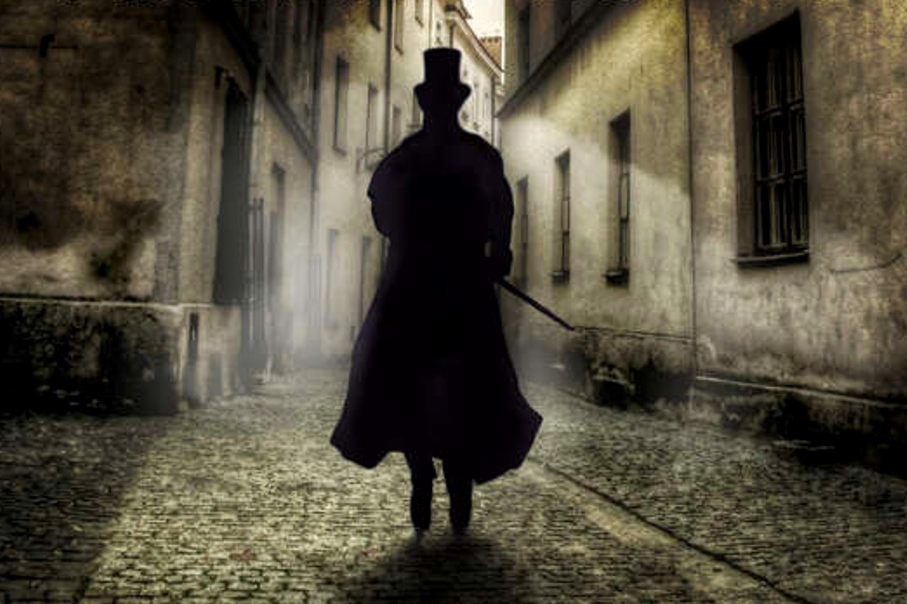

Arsène Lupin é uma personagem fictícia francesa criada por Maurice Leblanc. Este ladrão cavalheiro é conhecido particularmente pelo seu talento em usar disfarces e mudar de identidade, para cometer os seus delitos. O herói aparece pela primeira vez na nova A Detenção de Arsène Lupin, aparecida na revista Je sais tout em julho de 1905. O seu criador, Maurice Leblanc, atividade 1 turma B retoma esta notícia na selecção Arsène Lupin, ladrão cavalheiro aparecida no mesmo ano. Face ao sucesso crescente da personagem junto dos leitores, as suas aventuras aparecem de 1905 até ao óbito do autor em 1941, em dezoito romances, trinta e nove novelas e cinco peças de teatro.
